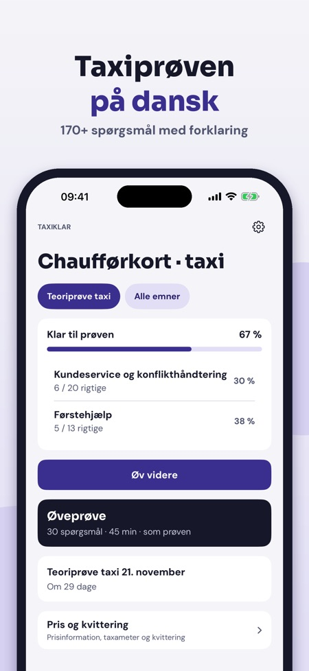
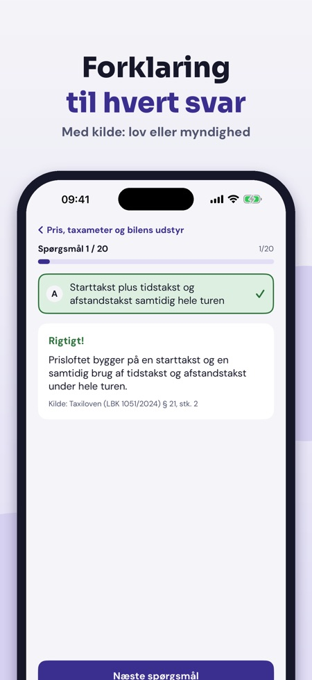
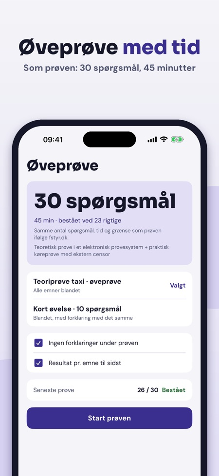

Teori til taxiprøven på dansk. Øv teorien til taxikørekort: spørgsmål med forklaring, prøveeksamen og reglerne for taxameter og priser – på dansk og uden internet.



Taxiklar hjælper dig med at øve teorien til taxikørekortet – med forklaringer, ikke kun det rigtige svar.
Uden køb kan du øve 20 spørgsmål pr. land, tage én hel øveprøve og bruge ordlisten, tjeklisten og Pris og kvittering. Den fulde version er et engangskøb, der låser alle spørgsmål, ubegrænsede prøveeksamener og statistik op. Intet abonnement.
Taxiklar er uafhængig og ikke tilknyttet Færdselsstyrelsen eller politiet. Prøven tager du efter kvalifikationskurset.